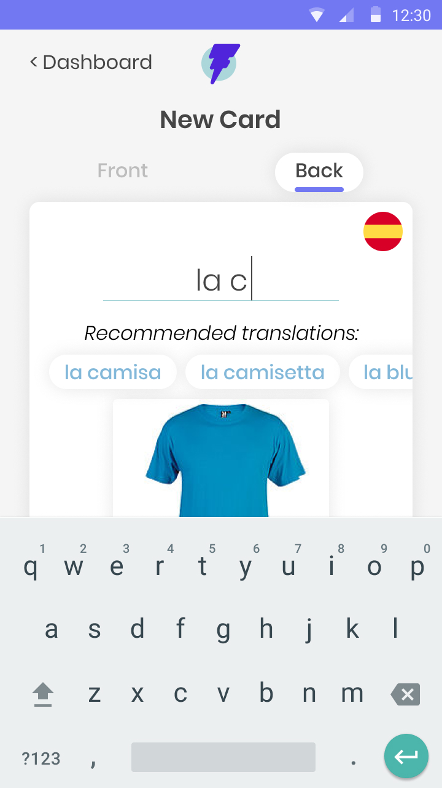
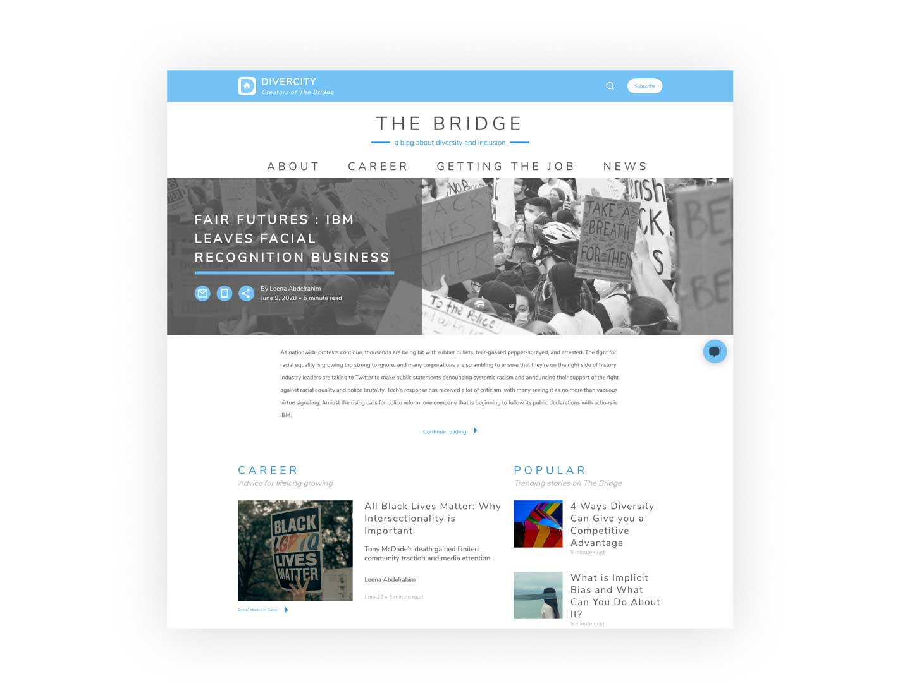

Flashbac is a flashcards application designed to streamline the creation and studying of your favorite topics on the go
WATCH THE DEMO
THE SITUATION
While traveling through Central and South America, I needed to quickly learn and retain Spanish phrases and vocabulary in order to communicate with locals. I tested several language learning services, but was disappointed by my inability to quickly log new terms learned while shopping at the local market or practicing conversational skills with teachers, students or merchants.
MY TAKE
In studying the work of Barbara Oakley and Gabe Wyner, I learned a few key principles of learning in the human brain:
1. Active recall vs. passive review: The act of quizzing ourselves on a given question or topic and forcing the mental process of searching and identifying the information has a much more powerful impact on memory, as compared to passively consuming information (e.g. reading)
2. Images enhance recall: Our brains evolved to register and record imagery in our environments long before formal language or written words. Associating images with new terms takes advantage of this ability and increases the likelihood of future recall.
3. Spaced repetition engrains patterns: Extending the timeline for studying information improves our ability to retain it, as opposed to intense studying over a short period of time.
MY ROLE
UX Design
UI Design
Branding
DELIVERABLES
Competitive analysis
User research
Personas
User stories
User flows
Wireframes
Usability testing
Logo
Style guide
HiFi prototype
User testing
Preference testing
TOOLS
Figma
Zeplin
Let's take a look at how we got there
1
COMPETITIVE ANALYSIS
While I had used several language-learning tools in the past, I began my work with a more comprehensive analysis of services that supported the key learning principles identified by experts in the field.
Three services met my criteria: Quizlet, Anki and Fluent Forever, and 6 key strengths emerged among these services:
| Image adding functionality |  |
|
|
| Image search | |
||
| Language-specific term recommendations | |
||
| 3+ recall options | |
||
| Study algorithm based on recall and time passed | |
|
|
| Intuitive progress reporting | |
SWOT Analysis
2
USER RESEARCH
With an understanding of the features prioritized by other flashcard apps, I next looked to understand the needs of our target audience. My research goal was to identify:
• The prevalence of flashcard use among learners
• The motivation for using flashcards
• The specific benefits and pain points experienced by flashcard users
• The topics studied using flashcards
• The interest for future learning
I was specifically interested in learning whether flashcard users mainly used flashcards for language-learning, or another topic of interest.
To answer these research questions, I surveyed learners ages 18-45 to better understand their approaches to learning new material. My survey results indicated that:
• The majority of my target audience is familiar with the use and mechanics of flashcards
• Flashcard users most frequently reported studying on their own
• They valued flashcards for the easy customization of their learning, the ability to clearly track their learning improvement over time, and the gamification of study
• They struggled with the excess of time required to create, organize and maintain flashcards over time, the challenge of incorporating other types of learning (audio, imagery, etc.) into written form and recalling concepts based on card order as opposed to true learning of the card’s content
-
94%
have used flashcards to study
-
64%
use flashcards for learning foreign languages
-
79%
store trip- and event-planning documents
Survey Results
3
PERSONAS
My data collection informed the creation of two personas for my ideal flashcards app: The Academic and The Life-long Learner.
-
ALICE, THE ACADEMIC
Female / Age 28 / San Diego-based Software Developer
“Studying can be fun if you have the right tools!”The Academic
-
LEN, THE LIFE-LONG LEARNER
Male / Age 37 / Digital Nomad
“There is always a chance to learn something new - especially when you are on the road!”The Juggler
5
USER FLOWS
To map the expected user flows for my flashcards app, I borrowed from familiar flashcard solutions, and improvised new flows when more streamlined, simplified flows were needed. Ultimately, I designed 7 primary user flows mapping to my high-priority user stories, including flows for creating new cards, new decks, studying decks and setting study reminders.
ALL FLOWS
6
WIREFRAMES
After collecting feedback on my user flows, I used them to identify each screen that would be required to complete each task. I then sketched a few potential designs for main screens like the dashboard, viewing and creating decks and new cards. My sketches allowed me to quickly prioritize my design concepts and translate my top choices to wireframes in Figma. To get feedback on these wireframes, I built a low-fidelity prototype and began usability testing with real users.
TAKE-AWAYS
Given 4 options to report recall (“Impossible”, “Hard”, “Good” and “Easy”), prototype testers noted that they would prefer 3 options: “Easy”, “Pass”, “Fail”.
When studying a given card and presented with the back-side answer, testers requested to see a reminder of the front-side term or question to solidify the learning of this concept.
When creating cards, users requested the ability to see the image they had selected for a given card throughout the card creation process to ensure they were consistent from front-side to back-side editing.
ALL WIREFRAMES
7
BRANDING
Next, I turned my research to branding. My app required a name and consistent branding guidance. To begin, I analyzed the use of color, iconography, and tone by my competitors, and brainstormed branding themes. I focused on names and themes that would make the flashcard utility clear to all users and provide a window in the fast and fun learning. After collecting feedback on several ideas, I vectorized logos for the name “Flashbac”, including a lightning bolt paired with the letter “F”. The new brand represented the tech-forward, simplified flashcard solution that would offer a fun and easy way to learn any topic, on the go, and in a flash!
I wanted my brand to include bright and playful colors to complement the game-like qualities of the app and make it fun to engage with. I explored blues, purples and teals in combination with my logo to refine my color palette, and tested this palette with several typefaces intended to match the accessible feel of the app.
With feedback from my developer, I ultimately decided on Montserrat Alternates for the logo typeface and the Poppins typeface for the app itself.
FLASHBAC STYLE GUIDE
-
LOGO
-
PRIMARY COLORS
-
BLACK AND GREY
8
HIGH-FIDELITY PROTOTYPE
Once I had incorporated all of the feedback from my usability testing into my wireframes, I was ready to apply my branding choices to the wireframes and bring them to life in a high-fidelity prototype. I took this prototype back to my users for another round of testing.
- 
TAKE-AWAYS
When creating the back-side of a given card for which the language was already specified, users valued access to accurate, readily-available, language-specific translations of their front-side term. I added quick-add suggestions to the back-side editing flow to streamline card creation.
Users expected to be able to easily delete existing decks from the main dashboard. I added this option and solidified our deck deletion logic with my developer.
After observing users scroll through decks and cards to explore available content, I added search functionality for quick navigation.
VIEW PROTOTYPE
WRAPPING IT ALL UP
After learning Spanish while traveling, I was especially motivated to create an easy-to-use flashcards app that would encourage me and other learners to maintain a life-long pursuit of learning new content. My research showed that making adding images and translations, incorporating multiple levels of recall reporting, and a study algorithm that would support spaced repetition would be required in a successful solution. I was proud to deliver a user-tested design that addressed these key priorities to my developer, and to incorporate their feedback throughout the entire process.
I will continue to iterate on this live solution with my developer in order to maintain a learning tool for myself and others. In the next iteration, I plan to create reporting for individual study sessions and update our landing page with additional branding and illustration.
Ready for another?
-

Spil Cloud Storage
Product Design + Branding
Learn more
-

The Bridge
Product Design
Learn more